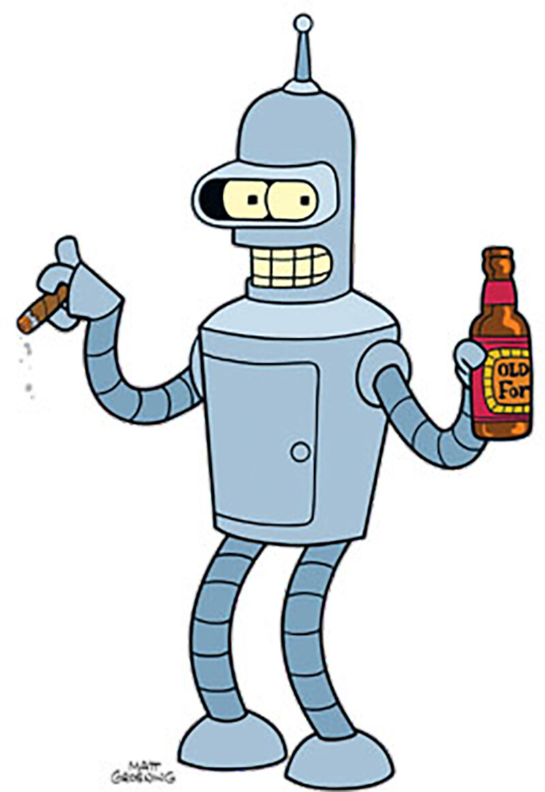

Experiências
Tabela de ações realizadas aqui
Johnny em sua epóca rebelde

Algumas ações feitas entre (1015-2016)
Cargos
Ações
Anos
Faxineiro
Após completar seus 6 anos, comecou a trabalhar de faxineiro na empresa de seu amigo nicolas tesla, onde ajudou ele a deixar tudo extremamente limpo.
1870
Empresário
Após descobrir que nicolas tesla nao era tao legal assim, ele decidiu se demitir e abriu sua propria empresa de utensilios caseiros, mas nao deu mt certo.
1890
Projetos rebeldes
Apos ver que nada estava dando certo, decidiu abrir varios projetos rebeldes, que auxiliava pessoas de todo mundo a fazerem atos ilegais, como pichaçao e roubo(ele odeia essa fase hoje em dia).
2001
Vencedor
Depois de se arrepender de tudo que fez, ele decidiu se tornar uma pessoa boa e comecou a fazer caridade, depois de muito tempo tudo comecou a dar certo e hoje em dia ele fatura milhoes com trabalhos no exterior.
2016-??
Clique aqui para voltar
| Cargos | Ações | Anos |
|---|---|---|
| Faxineiro | Após completar seus 6 anos, comecou a trabalhar de faxineiro na empresa de seu amigo nicolas tesla, onde ajudou ele a deixar tudo extremamente limpo. | 1870 |
| Empresário | Após descobrir que nicolas tesla nao era tao legal assim, ele decidiu se demitir e abriu sua propria empresa de utensilios caseiros, mas nao deu mt certo. | 1890 |
| Projetos rebeldes | Apos ver que nada estava dando certo, decidiu abrir varios projetos rebeldes, que auxiliava pessoas de todo mundo a fazerem atos ilegais, como pichaçao e roubo(ele odeia essa fase hoje em dia). | 2001 |
| Vencedor | Depois de se arrepender de tudo que fez, ele decidiu se tornar uma pessoa boa e comecou a fazer caridade, depois de muito tempo tudo comecou a dar certo e hoje em dia ele fatura milhoes com trabalhos no exterior. | 2016-?? |
| Clique aqui para voltar |